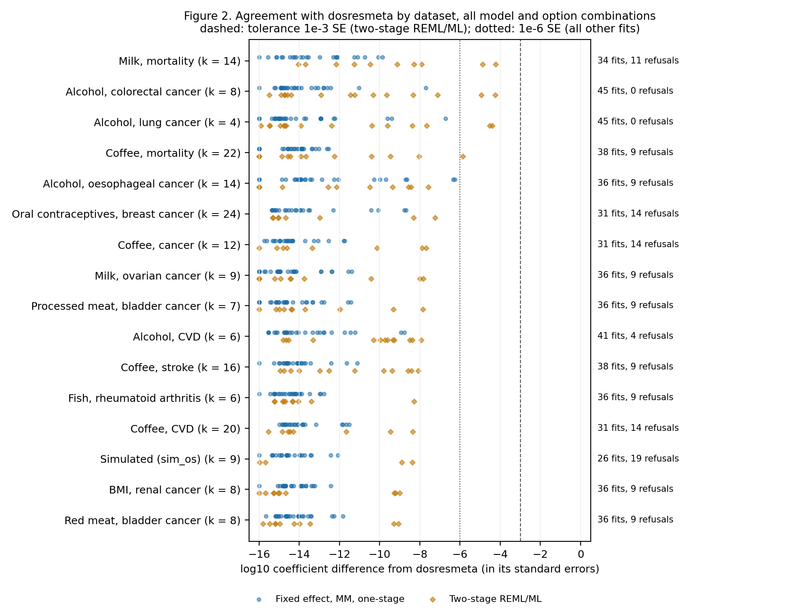
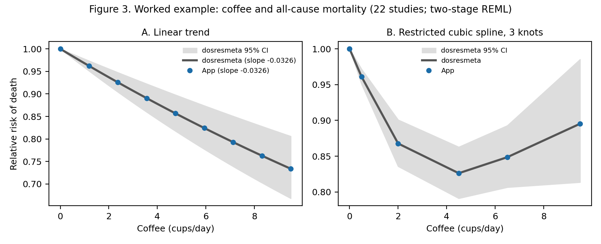
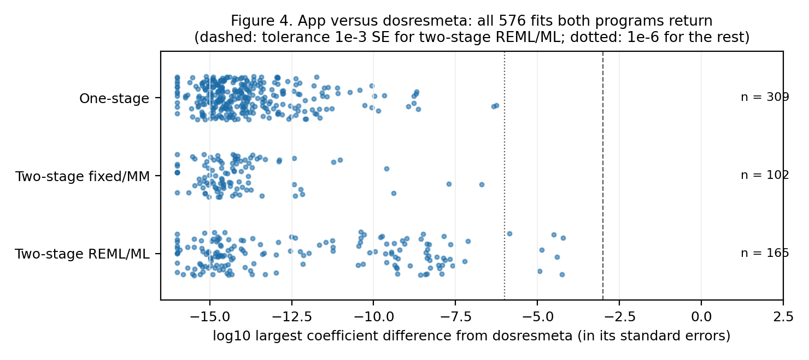
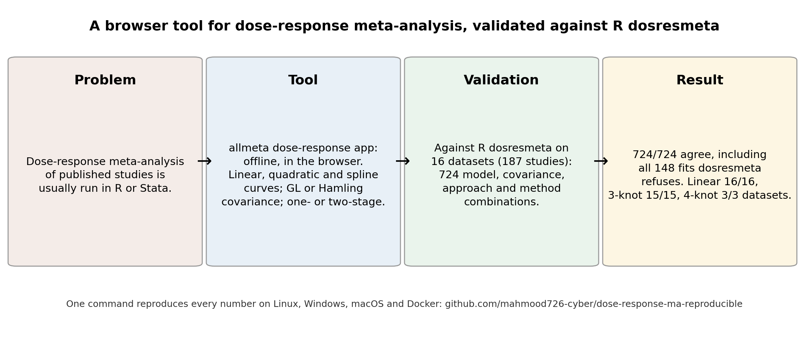

All runs · Repository · Paper archive (Zenodo) · Live app
Dose-response meta-analysis app: validation against dosresmeta: latest verified full run
Run 37227400840 on commit 4145e3f, published 2026-10-04 19:16 UTC. Full validation: every number in the paper.
| Platform | Result |
|---|---|
| Docker (canonical) | 49/49 numbers reproduced |
| Linux | 49/49 numbers reproduced |
| Windows | 49/49 numbers reproduced |
| macOS | 49/49 numbers reproduced |
| Cross-platform comparison (corpus and engine output bit-identical on the strict platforms) | success |
Every checked number (canonical run: full-docker)
| Quantity | Expected | Reproduced | Result |
|---|---|---|---|
| datasets | 17 | 17 | PASS |
| studies_total | 203 | 203 | PASS |
| dose_levels_total | 890 | 890 | PASS |
| datasets_analysed | 16 | 16 | PASS |
| studies_excluded_missing_counts | 16 | 16 | PASS |
| studies_analysed | 187 | 187 | PASS |
| grid_fits | 724 | 724 | PASS |
| grid_R_fitted | 576 | 576 | PASS |
| grid_R_refused | 148 | 148 | PASS |
| grid_refusals_matched | 148 | 148 | PASS |
| grid_app_refused_R_fitted | 0 | 0 | PASS |
| grid_app_fitted_R_refused | 0 | 0 | PASS |
| grid_within_tolerance | 724 | 724 | PASS |
| grid_all_within_tolerance | 1 | 1 | PASS |
| iterative_fits | 165 | 165 | PASS |
| direct_fits | 411 | 411 | PASS |
| iterative_coef_below_1e-4_SE | 1 | 1 | PASS |
| iterative_loglik_below_1e-7 | 1 | 1 | PASS |
| direct_coef_below_1e-6_SE | 1 | 1 | PASS |
| R_one_stage_not_converged | 120 | 120 | PASS |
| linear_fitted_by_R | 16 | 16 | PASS |
| linear_agree | 16 | 16 | PASS |
| spline3_fitted_by_R | 15 | 15 | PASS |
| spline3_agree | 15 | 15 | PASS |
| spline3_refused_by_R | 1 | 1 | PASS |
| spline3_refusals_matched | 1 | 1 | PASS |
| spline4_fitted_by_R | 3 | 3 | PASS |
| spline4_agree | 3 | 3 | PASS |
| spline4_refused_by_R | 13 | 13 | PASS |
| spline4_refusals_matched | 13 | 13 | PASS |
| spline5_fitted_by_R | 2 | 2 | PASS |
| spline5_agree | 2 | 2 | PASS |
| spline5_refused_by_R | 14 | 14 | PASS |
| spline5_refusals_matched | 14 | 14 | PASS |
| linear_datasets_with_nonzero_reference | 12 | 12 | PASS |
| ex_k | 22 | 22 | PASS |
| ex_nonzero_ref | 12 | 12 | PASS |
| ex_R_slope | -0.0326 | -0.03256 | PASS |
| ex_app_slope | -0.0326 | -0.03256 | PASS |
| ex_R_slope_se | 0.005 | 0.005035 | PASS |
| ex_knots | 0/2/6.5 | 0/2/6.5 | PASS |
| ex_nonlin_chi2 | 24.5 | 24.454 | PASS |
| ex_nonlin_p_below_1e-4 | 1 | 1 | PASS |
| ex_I2 | 59 | 59 | PASS |
| ex_grid_dose | 2 | 2 | PASS |
| ex_rr_R | 0.87 | 0.8678 | PASS |
| ex_rr_lo | 0.84 | 0.8359 | PASS |
| ex_rr_hi | 0.9 | 0.9009 | PASS |
| ex_spline_below_1e-8 | 1 | 1 | PASS |
Also as reproduction_report.md and stats.json; every run's full outputs are artefacts of the run.
Figures from this run



